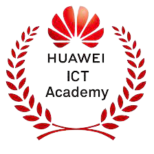

Video Player Placeholder
Mahasiswa Prodi Teknologi Rekayasa Internet PENS Sabet Juara 2 Kategori Hackathon Tingkat Nasional
Surabaya, tri.pens.ac.id- Politeknik Elektronika berhasil meraih Juara Umum pada Kompetisi
Mahasiswa Informatika Politeknik Nasional (KMIPN) VI 2024 di Jakarta. Hal ini merupakan
keenam kalinya bagi PENS menjadi juara umum secara berturut-turut. Ajang KMIPN tahun...
Lihat Semua Berita


PROFIL TEKNOLOGI REKAYASA INTERNET
Sarjana Terapan Teknologi Rekayasa Internet akan mendapatkan materi teori dan praktek tentang elektronika umum, pengembangan aplikasi website, network security, cloud computing, mobile computing, dan Internet of Things (IoT).
Dengan dosen yang berpengalaman dalam akademik dan praktisi, maka lulusan akan memiliki kompetensi antara lain Internet Developer, Internet Network Engineer, Network Security Engineer, Cloud Computing Engineer, Mobile dan IoT Engineer, dan masih banyak lainnya.
Kerjasama dan Sertifikasi Kompetensi
